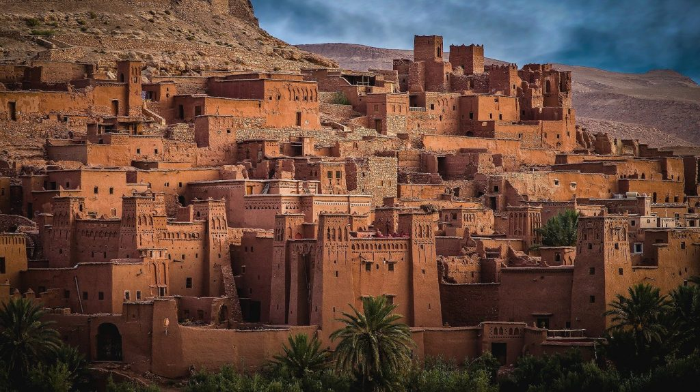
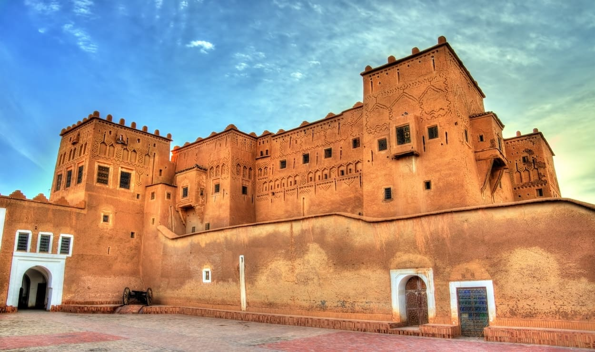
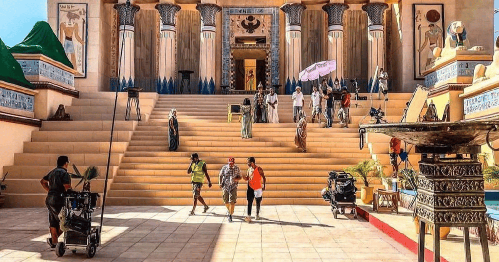
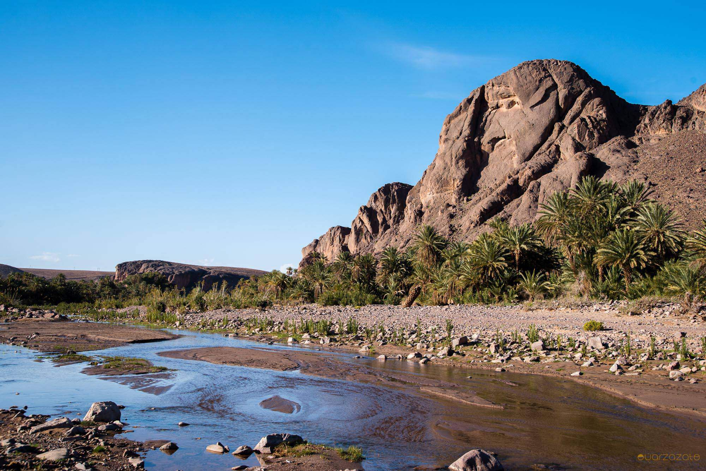
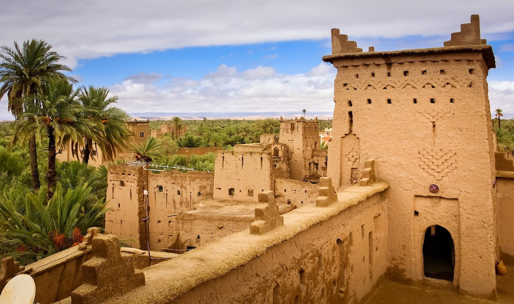

À propos de Ouarzazate
Située aux portes du Sahara, Ouarzazate est célèbre pour ses kasbahs historiques, ses paysages désertiques et son rôle majeur dans le cinéma mondial. La ville est un point de départ vers les vallées et oasis du sud.
Faits rapides
- Population : ~80k
- Région : Drâa-Tafilalet
- Surnom : Hollywood d’Afrique
- Altitude : 1 160 m
Culture
Ouarzazate est un carrefour entre la culture amazighe et saharienne. Elle est connue pour ses kasbahs en pisé, ses traditions artisanales, et son rôle majeur dans l’industrie cinématographique mondiale grâce aux studios Atlas.
Kasbahs
Aït Ben Haddou, Taourirt…
Cinéma
Films internationaux, studios.
Artisanat
Tapis, bijoux, cuir.
Nature
Désert, oasis, vallées.
Sites incontournables

Kasbah Aït Ben Haddou
Patrimoine mondial UNESCO, l’un des ksour les plus emblématiques du Maroc.

Kasbah Taourirt
Ancienne résidence du Glaoui, symbole majeur de l’architecture sud-marocaine.

Atlas Studios
Les plus grands studios de cinéma d’Afrique, utilisés pour des productions hollywoodiennes.

Oasis Fint
Oasis verdoyante et paisible au cœur de la région désertique.

Palmeraie de Skoura
Grande palmeraie célèbre pour ses kasbahs traditionnelles et ses paysages apaisants.